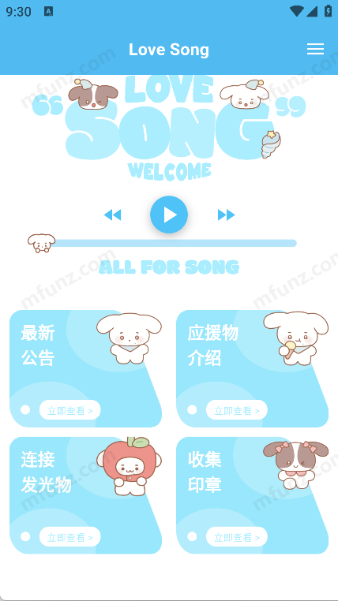
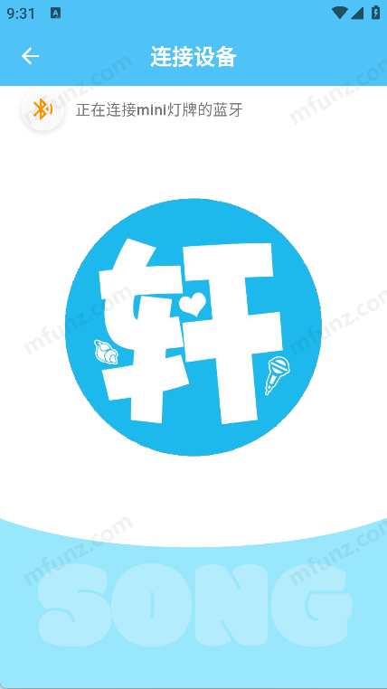

一场演唱会的贴身工具：LoveSong 能力面深度盘点
从蓝牙连灯牌到改字改色实时预览，再到规划中的粉丝互动功能，系统性梳理 LoveSong 这款应援工具能为现场粉丝做什么、做不到什么，以及谁适合用它。
开场：它解决的是「演唱会现场」这个极端场景
做应援工具的不少，但 LoveSong 的定位非常聚焦——从 LoveSong官网 的产品描述就能看出来，它不是通用的应援平台，也不是后援会的官方客户端，它是宋亚轩粉丝在演唱会现场拿在手里的那个 App。这个场景有几个极端约束：人多、电磁干扰强、时间紧（一首歌三四分钟要切应援语）、设备可能只有一台手机加一个灯牌。LoveSong 的所有功能设计都围绕这几个约束展开，盘点下来会发现它不是大而全的产品，而是一个把现场应援的几个关键环节做透了的刚需工具。
能力域一：蓝牙连接与应援物控制
这是 LoveSong 最核心的能力域，也是用户进场后第一件要做的事。表面看就是"开蓝牙 → 搜设备 → 连"，但在演唱会现场这个场景下，这三步每一步都可能出问题。
连接流程的设计
装好 App（安装包从 官方下载 拿就行）后，LoveSong 把蓝牙权限、位置权限、配对模式这几个容易踩坑的前置条件都在首页给了明确的引导，而不是让用户点到蓝牙连接页才发现权限没开。mini 灯箱和应援棒走同一个连接入口、同一个搜索结果列表，不管你带的是手持棒状还是桌面盒状的应援物，都不用切换入口找不同的控制界面——这点对同时带多件应援物的粉丝很友好。

抗干扰：现场最现实的问题
LoveSong文档 里花了不少篇幅讲蓝牙干扰，这不是技术啰嗦，是真的会在闸口附近发生——几百人同时开蓝牙搜索、安检设备的电磁波、场馆里的无线麦克风和对讲机，2.4 GHz 频段被挤得满满当当。标称 10 米的 BLE 有效距离，现场通常只有 1~3 米。LoveSong 本身不做什么信号增强，但它给了清晰的对策指引：过了安检再连、手机放身前口袋别塞背包里、连不上就等坐定后再试——这些都是从大量现场反馈里沉淀出来的实用经验。
局限：单设备控制
v1.0.2 内测版一次只能控制一个灯牌/灯箱。如果你同时带了应援棒和 mini 灯箱，得分别连接、分别控制，不能同时改两个设备的内容，切换设备还要先断开再重连。对于大多数粉丝来说问题不大，但重度应援玩家可能会觉得不方便。
能力域二：灯牌个性化自定义
连上设备之后，点击中间那个大大的圆形图标就能进入自定义界面——这一步的交互设计很直观，没有多级菜单套着。
实时同步是核心体验
改字、改色、换字体，每一步修改都会立即同步到灯牌上，不需要额外点"保存"或"发送"。这个设计看似理所当然，实际在现场体验里差别很大：一首歌结束后要快速换下一句应援语，边改边看效果比改完再发、发完再检查要高效得多。文档里还提到可以提前预设几种颜色搭配试好，进场前在家先排雷——对第一次带灯牌上现场的粉丝来说，这个建议值回票价。

颜色与字体的灵活性
预设颜色选起来快，色盘自定义则能调出更贴合应援主题的颜色。不同场次的环境光不同——白天场次对比度要高，夜间场次荧光色更显眼。字体有粗细和风格选项，显示屏物理尺寸有限时选合适的字体能多塞进几个字。这些都是小细节，但在现场就是能不能被周围人看到的区别。
能力域三：粉丝互动功能（规划中）
文档里有一整块讲留言、打榜、声援计划的内容，但全部标注着"v1.0.2 未开放""规划阶段"。这块能力值得单独提一下，因为它指向 LoveSong 未来的定位变化——从一个纯个人工具变成粉丝群体应援活动的线上载体。
三组功能的完整拼图
留言、打榜、声援计划三者不是孤立的：留言是文字形式的应援表达，打榜是量化的应援贡献，声援计划是语音形式的应援。后援会发布任务清单，粉丝在 App 里汇报进度，集体达成目标后解锁奖励——这套设计如果上线，LoveSong 就不只是进场时用的工具，而是从演出前几周开始就能参与的粉丝社区入口。
现阶段的定位
在社区功能上线前，文档明确写了 LoveSong 的核心价值仍然是"现场应援工具"——刷公告、连灯牌、扫印章这三件事才是它现阶段的刚需。粉丝互动主要还是靠微博超话、微信群、B站二创频道。这个定位边界划得很清楚，没有为了凑功能把还没做好的东西提前放出来。
短板也要说
盘点到这里，LoveSong 的边界也很清晰了。几个客观局限值得一提：
- 蓝牙抗干扰：前面讲对策讲了半天，但本质上 BLE 在电磁密集环境下就是容易断，App 层面的优化空间有限，现场体验还是得靠粉丝自己摆放手机和灯牌的位置。
- 单设备控制：一次只能连一个应援物，切换需要断开重连，对多设备玩家来说是硬伤。
- 社区功能全在规划：留言打榜声援计划都还没开放，现阶段的粉丝互动要靠其他平台。
- 内测阶段：v1.0.2 还是内测版，功能稳定性和覆盖的设备型号都还在迭代。
什么样的人该用它
三个画像，对应不同的使用强度：
演唱会现场应援粉丝——这是 LoveSong 的核心用户群。不管你是第一次带灯牌上现场还是已经跑过好几场，蓝牙连接引导、改字改色实时同步、闸口干扰对策这些功能都是直接能用的。进场前花十分钟把应援语预设好，现场体验会顺畅很多。
mini 灯箱桌面党——把 mini 灯箱摆在座位上或带回家当装饰的粉丝，同样走蓝牙连接流程，LoveSong 统一控制，不用另外找控制 App。
宋亚轩后援会成员——如果你在参与应援活动的组织和协调，虽然社区功能还没上线，但刷公告、扫印章这些日常功能已经能用。等留言打榜声援计划开放后，LoveSong 会成为线上线下应援活动的统一入口。